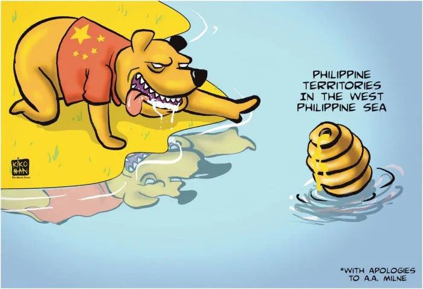

<html lang="en"></html>
<head>
    <meta charset="UTF-8">
    <meta name="viewport" content="width=>, initial-scale=1.0">
    <title>Editorial</title>
    <link rel="stylesheet" href="style.css">
    <link rel="icon" href="logo.png" type="image/logo.png">
</head>
<body>
    <header>
        
    <ul>
        <li class="head"><a href="index.html" class = "link">Home</a></li>
        <li class="head"><a href="contact.html" class = "link">Contact</a></li>
        <li class="head"><a href="about.html" class = "link">About</a></li>
    </ul>

    <h1>EDITORIAL</h1>


</header>
<div class="bar">
    <div id="menu">
        <section class="feature-box sec_1">
            <li class="nav"><a href="news.html" class="link"><center>News</center></a></li>
        </section>
        <section class="feature-box sec_1">
            <li class="nav"><a href="weather.html" class = "link"><center>Weather</center></a></li>
        </section>
        <section class="feature-box sec_1">
            <li class="nav"><a href="sports.html" class = "link"><center>Sports</center></a></li>
        </section>
        <section class="feature-box sec_1">
            <li class="nav"><a href="editorial.html" class = "link"><center>Editorial</center></a></li>
        </section>
        <section class="feature-box sec_1">
            <li class="nav"><a href="entertainment.html" class = "link"><center>Entertainment</center></a></li>
        </section>
        
    </section>
    </div>
    </div>
    <section class-="news">
          
        
    
     
    <div class="news">
    
    <h1 class="news_1">DFA cancels Alice Guo’s PH passport</h1>
    <p class="article_duterte">
        The recent cancellation of former Bamban Mayor Alice Guo’s Philippine passport highlights the importance of safeguarding 
        the integrity of national documents. The Department of Foreign Affairs (DFA), acting on evidence provided by the National 
        Bureau of Investigation (NBI), swiftly revoked her passport, citing fraudulent acquisition. This case underscores the DFA’s 
        commitment to upholding strict standards in passport issuance and signals their zero-tolerance policy for circumventing legal 
        procedures. While the quick action reassures the public of the DFA’s vigilance, it also raises concerns about potential 
        vulnerabilities in the initial passport screening processes that allowed such fraud to occur.The incident invites broader
         reflection on how effectively the government can balance national security with protecting individuals' rights. Ensuring 
         thorough vetting and strong safeguards is crucial to preventing similar incidents while maintaining fairness. Guo’s case serves 
         as a warning, but it also underscores the need for continued vigilance and refinement in the passport application process to
          prevent future exploitation of the system.
    </p>

    </div>
    <section class="news">
        
        <h1 class="news_1">PCG: China’s bullying in West Philippine Sea undermines international law</h1>  
        <p class="article_duterte">
            China's continued aggression in the West Philippine Sea not only threatens Philippine sovereignty but also weakens the 
            foundation of international law. By ignoring the 2016 ruling that rejected its broad claims over the sea, China is trying
            to use force in a region where the Philippines has legal rights. This clear violation of international rules is a challenge
            to the system that protects smaller nations like the Philippines. The Philippines’ brave stand in defending its waters is not just about protecting territory—it’s about standing up 
            for the rule of law. If China is allowed to break these rules, other powerful countries may do the same, risking the peace 
            and stability that international law provides. The world must support the Philippines to ensure that respect for law prevails
            over bullying in the West Philippine Sea
           
        </p>
    </section>
    <section class="news">
        
        <h1 class="news_1">Diwata, kinumpara ang kongreso sa pamamahala sa pares; Dolphy naalala sa ‘madaling tumakbo, e paano kung manalo?</h1>  
        <p class="article_duterte">
            As the Philippines approaches its elections, the rise of celebrities and vloggers seeking Senate positions raises significant 
            concerns. While figures like Diwata, Marco Gumabao, and Rosmar Tan bring fresh attention to politics, we must remember that 
            politics is not an experiment where any person can take charge; the people of the country deserve a leader who knows what they 
            are doing. The requirements for becoming a senator should include being a college graduate with relevant experience in governance
             and policy-making. However, the reality is that many famous individuals continue to win these positions based on popularity rather
              than competence. The responsibilities of a senator require a strong understanding of government, law, and public service—qualities that 
              are often overlooked when popularity takes priority.This trend risks reducing serious governance to a popularity contest, undermining the essential qualities
              needed for effective leadership. While engaging with voters through entertainment is valuable, it should not replace
               the necessity for competence and experience in addressing the complex issues our nation faces. As we approach this 
               pivotal election, let us prioritize candidates who demonstrate both capability and a genuine commitment to public service 
               over those who simply rely on their celebrity status.
        </p>
       